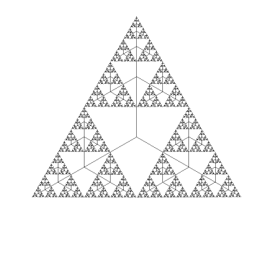

Diferitele pagini ale site-ului:
Home
Game of life
Arbori R/N - atestat cl.12
Oglinda
Operatii pe biti
Sortari
Shape-uri Acorduri
Am creat acest site pentru a explora diferite idei si subiecte pasionante. De asemenea, site-ul inglobeaza unele proiecte realizate de mine si contine articole asupra unor teme care mi-au starnit interesul. Lectura placuta a site-ului!Am creat acest site pentru a explora diferite idei si subiecte pasionante. De asemenea, site-ul inglobeaza unele proiecte realizate de mine si contine articole asupra unor teme care mi-au starnit interesul.
Citate:
"Universul este un cerc al cărui centru e pretutindeni și a cărui circumferință nu e nicăieri." -Blaise Pascal
"De ce îi este omului de astăzi foame? De iubire şi de sens." -Nicolae Steinhardt
"Un om nehotărât ajunge la fiecare pas pe pragul unei alternative, adică în situația de a vedea că este într-adevăr o ființă liberă. Un om hotarât este lipsit de acest neajuns." -Lucian Blaga
"Nature uses only the longest threads to weave her patterns, so each small piece of her fabric reveals the organization of the entire tapestry." -Richard Feynman
"Adevarul este atat de obscur in zilele acestea, iar falsitatea atat de bine impamantenita, incat daca nu iubim adevarul nu il putem cunoaste." -Blaise Pascal
"When joy disappears, look for your mistake" - Lev Tolstoi
"A trăi înseamnă a face compromisuri. Orice om care nu moare de foame este suspect." - Emil Cioran
"Plictiseala e senzaţia bolnăvicios de clară a timpului ce te aşteaptă, în care trebuie să trăieşti şi cu care n-ai ce să faci." -Emil Cioran
"Curajul nu este, pur şi simplu, una din virtuţi, ci forma pe care o ia fiecare virtute când e pusă la încercare." - C.S. Lewis
"Omul este un infinit în virtualitate, omul este făcut pentru infinit, dar nu este infinit în sine. Devine infinit în legătura cu Dumnezeu" - Dumitru Staniloae